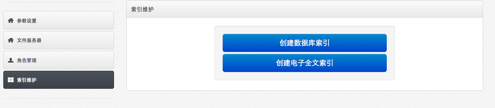

系统配置
索引维护帮助
索引维护

操作流程
点击首页功能菜单［系统维护－系统配置］，打开系统配置。
点击［索引维护］按钮，打开索引维护功能。
本系统支持档案数据索引和电子全文索引。本系统支持自动和手动创建索引。自动创建索引会每天在后台自动启动一次，手动点击按钮，也可以随时创建索引。注意：只有创建了索引，智能检索、高级检索和全文检索才能正常使用。
创建索引
点击［创建数据库索引］和［创建电子全文索引］按钮，创建索引。